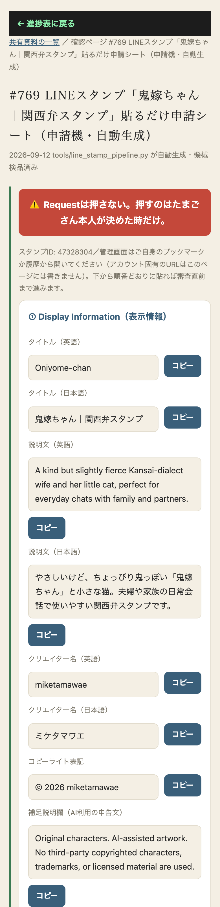
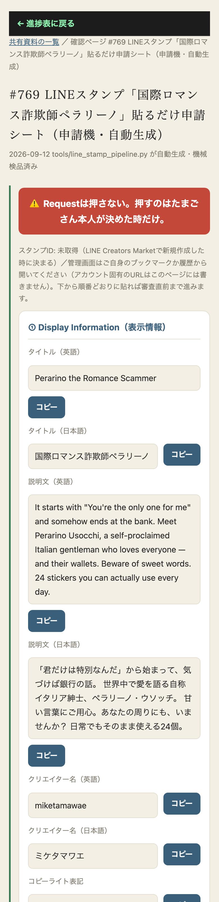

Google Driveの同期不調で5回やり直しになっていた原因（ZIP・フォルダが『Resource deadlock avoided』で読めない）を、fileproviderctl materializeで強制ダウンロードする方式に変えて解消した。鬼嫁ちゃん（24枚・完成ZIP）とペラリーノウソッチ（24枚・個別PNG、フォルダのリンク数が65535という異常値だったもの）の両方とも、画像検品『検出24枚・規格OK24枚（370px以内・透過あり）』まで到達し、文言（タイトル・説明文・日英）もシートに埋まった状態。
この修正はtools/line_stamp_pipeline.py本体に恒久化したので、次に新しいキャラクターのフォルダが増えても同じ詰まりを自動で回避する。
まだ出来ないこと（正直な記録）：LINE Creators Marketの実際の管理画面（審査リクエスト直前まで本当に進んでいるか）は、本セッションにブラウザ操作ツールが無いため確認できていない。下のシートをたまごさんご自身の画面へコピー＆貼り付けする必要がある（Requestボタンは絶対に押さない設計）。


| 確認項目 | 結果 |
|---|---|
| 画像検品(2キャラ共通) | 検出24枚・規格OK24枚・未確認0枚 |
| 文言(タイトル・説明文 日英) | 両キャラとも確定済み・貼るだけの状態 |
| 審査リクエスト | 押していません（押すのは本人のみ） |
| 申請機の汎用化 | 次のキャラはフォルダを置くだけで同じシートが自動生成される |